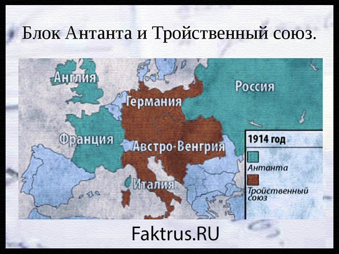

Блоки
Могущественные военные блоки Первой мировой
войны 1914-1918 годов сражались не на жизнь, а на смерть.
Россия тоже была вовлечена в этот глобальный конфликт, став одним из
государств-основателей Антанты, антигерманской коалиции. Правда, из-за
революции 1917 года Россия вышла из войны ещё до её
окончания.
Военно-политические
блоки Первой мировой войны
Оба
основных военных блока Первой мировой войны, Антанта и Тройственный
союз,
сложились задолго до, собственно, начала
Первой мировой в 1914 году.
Центральные державы (Германия, Австро-Венгрия и Италия) образовали альянс
в 1882 году, и именно это событие положило начало разделу
Европы на враждебные лагеря. Австро-Венгрия и Германия ещё
в 1879 году заключили союзный договор, а
в 1882 к ним присоединилась Италия, и все три державы подписали
секретный договор о союзе. Внешняя политика стран Тройственного союза
характеризовалась возрастающей борьбой за заморские колонии.
Закономерной реакцией на создание Тройственного союза стало создание противостоящего ему военного блока России, Франции и Великобритании, получившего название «Антанта». Оформился он в 1904-1907 годах, хотя франко-русский договор был подписан ещё в 1891 году. В 1892 обе эти страны, Франция и Россия, подписали секретную военную конвенцию, а в 1893 заключили оборонительный союз. В 1904 году было подписано англо-французское соглашение, а в 1907 аналогичное соглашение подписали Англия и Россия, что завершило формирование Антанты.

Антанта
Всего в
Антанту входило три страны – Российская империя, Франция, Британская
империя. Однако, в ходе событий
Первой мировой войны к
ним присоединилось множество союзников – целых 27 государств, хотя
не все они принимали реальное участие в боевых действиях. Создание Антанты было
попыткой не допустить гегемонии (господства) Германии в Европе, так как
крепнущая германская экономика и всё возрастающие амбиции этой страны вызывали
обеспокоенность России, Франции и Великобритании, которая в те годы сама была
первой экономикой мира.
Тройственный
союз
В первоначальном составе Тройственный союз в сражениях Первой мировой войны не участвовал – когда война началась, Италия отказалась вступать в неё, объявив о нейтралитете, а вскоре и вовсе перешла на сторону Антанты. Однако, к Германии и Австро-Венгрии присоединились Болгария и Османская империя, так что этот военный блок Первой мировой войны стал называться Четверным союзом. В целом он продержался почти до конца боевых действий, но ведущую роль в нём играла Германия, обладавшая мощной экономикой и не менее мощной армией.